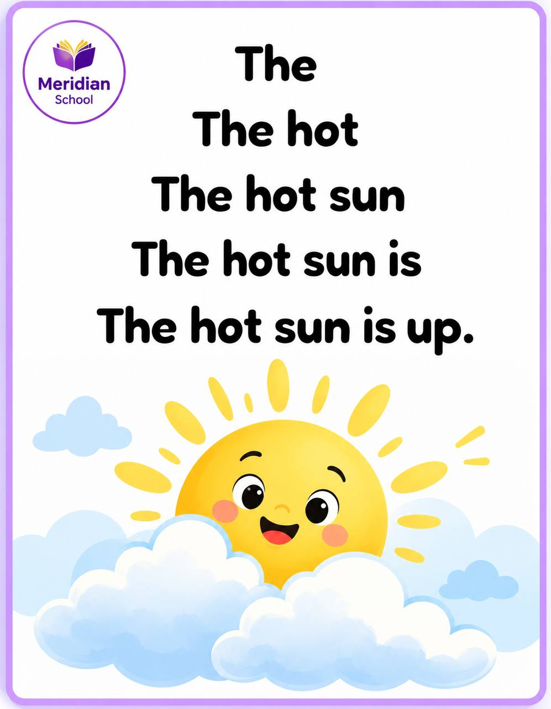
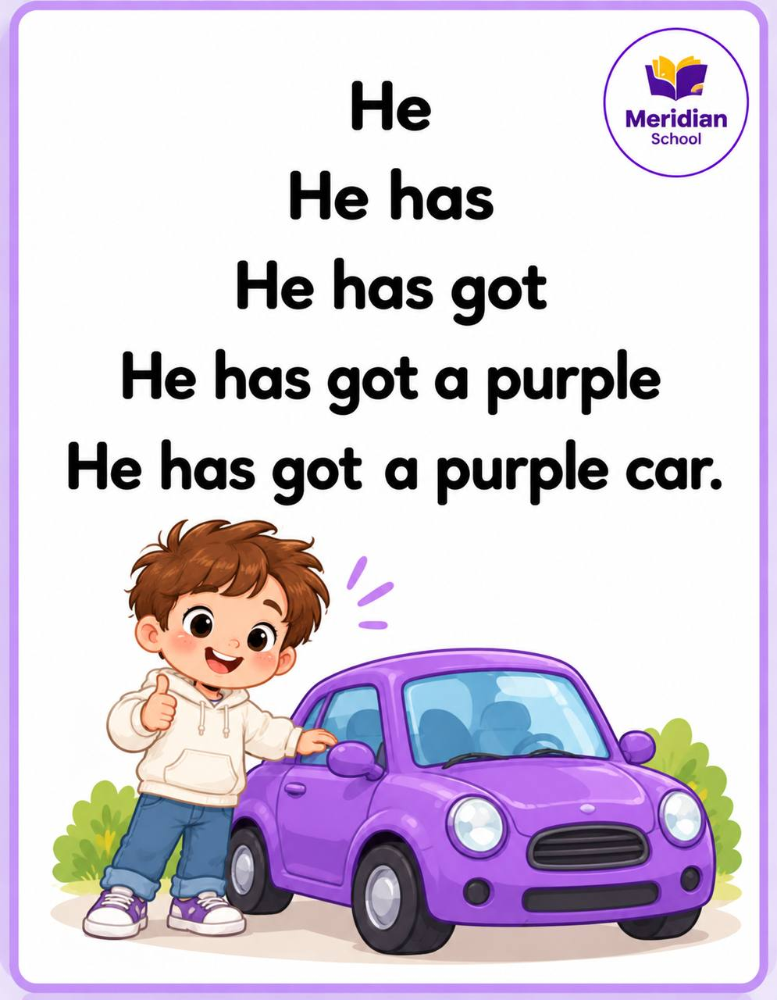
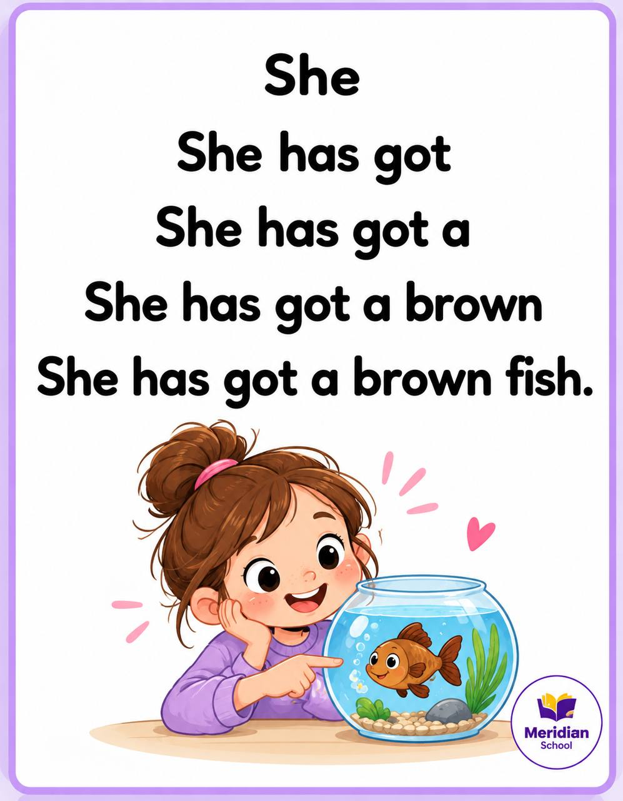
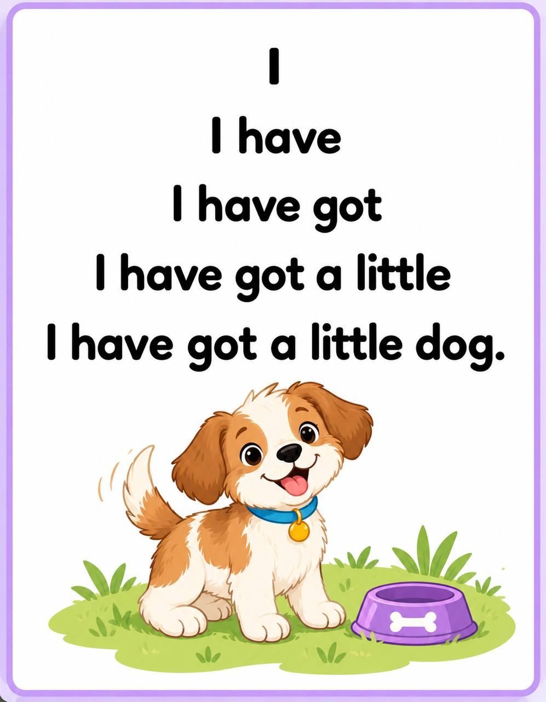
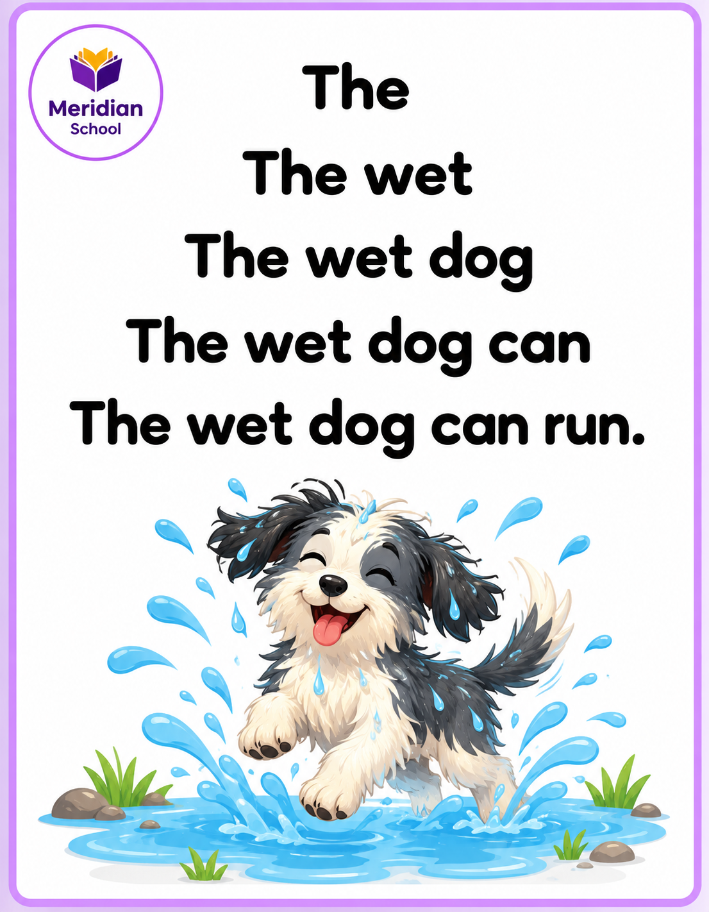
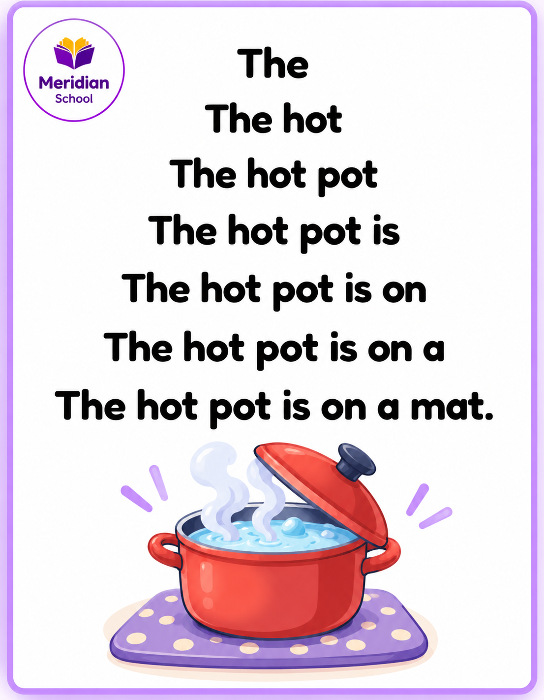
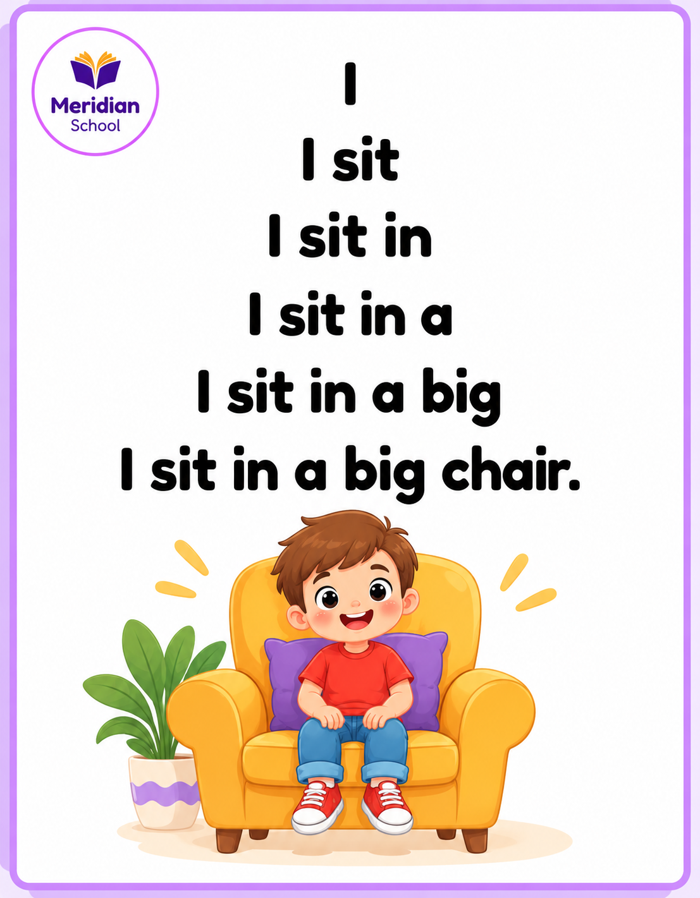
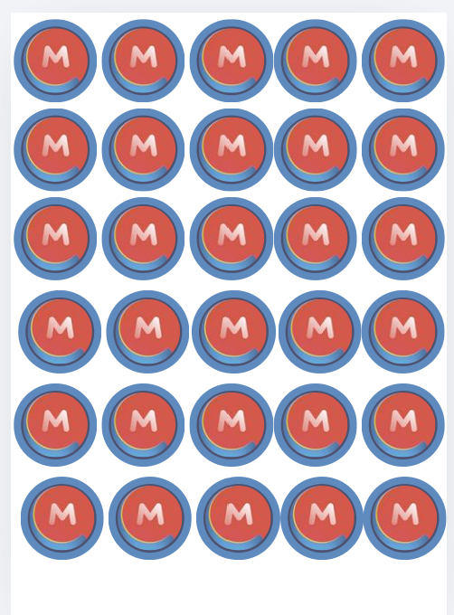
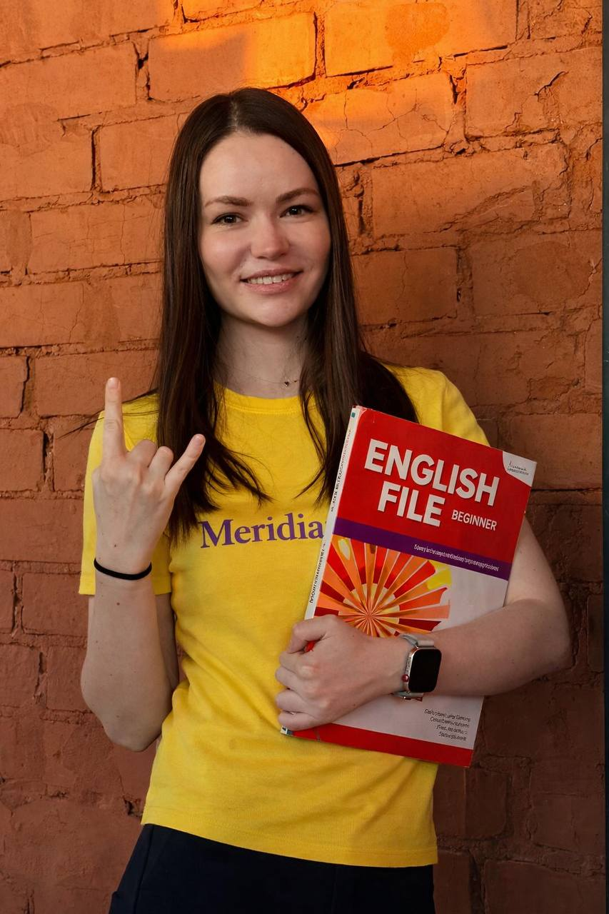

Школа
чтения ✨
Ребёнок знает английские буквы, но всё ещё спрашивает: «Мам, а как это читается?»
За 3 недели поможем разобраться в правилах английского чтения и начать читать самостоятельно — через короткие видео, игры и небольшие тексты.
Старт — 23 ноября 2026 · Доступ до 15 января 2027
Читать, а не угадывать
Учим ребёнка замечать звуки и сочетания букв, соединять их в слова и постепенно переходить к предложениям.
Как устроена «Школа чтения»
Всё происходит в закрытом Telegram-канале. Материалы появляются по расписанию, а заниматься можно в удобное время.
Вступаете в закрытый канал
После успешной оплаты бот отправит ссылку для вступления. Все видео, игры и рабочие листы будут собраны в одном месте.
Готовитесь до 23 ноября
Смотрите вместе с ребёнком 4 подготовительных видео по звукам и буквам. После каждого видео ребёнок играет в интерактивные игры, чтобы лучше запомнить изученное.
23 ноября начинается марафон
По понедельникам, средам и пятницам выходят новые видеоуроки по звукам и буквосочетаниям. После каждого — интерактивные задания на отдельной платформе. Регистрироваться там не нужно: просто переходите по ссылке и играете в чтение.
По субботам — итоговое чтение
В субботнем уроке объединяем правила недели. К нему выходит «Пирамидка чтения» — небольшой текст для плавной тренировки чтения.
Тренируетесь и собираете эмкойны
К каждому видео прилагается рабочий лист с простым заданием. Его можно распечатать и сложить в «папку чтения». Под постами можно по желанию оставлять аудио или видео чтения ребёнка и получать эмкойны за выполненные задания.
Ваш ритм на каждую неделю
Три новых урока и один итоговый — предсказуемо и без перегрузки.
Каждый видеоурок занимает примерно 3–5 минут. Затем ребёнок закрепляет правило в игре и на рабочем листе.
📄 Что такое пирамидка чтения?
Текст растёт строчка за строчкой: от одного слова к целому предложению. Ребёнок постепенно учится читать тексты от простого к сложному.







Настоящие примеры материалов Meridian School. Листайте карточки в сторону.
Учимся — и собираем эмкойны! 🪙

За каждое сданное задание ребёнок получает эмкойн — игровую монетку «Школы чтения».
🏆 Что в финале?
Участники, которые соберут все эмкойны, получают диплом участника и участвуют в финальном розыгрыше призов марафона.
Отправлять аудио или видео с чтением можно по желанию. Для получения эмкойнов необходимо сдавать задания.
Что входит в марафон
До старта отдельно доступны 4 подготовительных видео по буквам и звукам. Все материалы останутся в канале до 15 января 2027 года.
Кто создал «Школу чтения»?

Светлана Маркова
Основатель школы английского языка Meridian и преподаватель английского.
В «Школе чтения» я собрала короткие объяснения и игровую практику, чтобы ребёнок постепенно учился читать сам.
Программа «Школы чтения»
4 подготовительных видео до старта и 12 уроков за 3 недели: понедельник, среда, пятница — новые правила; суббота — закрепление и пирамидка чтения.
Смотреть план марафона
До 23 ноября · Подготовка
- Согласные звуки: SATPIN и другие часто встречающиеся буквы
- Короткие гласные и первые CVC-слова: cat, pin, sit
- Соединяем звуки и самостоятельно читаем CVC-слова
- SH, CH, CK: ship, chip, duck
Неделя 1 · 23–28 ноября
- Пн: TH, WH — this, that, when, what
- Ср: Сочетания согласных ST, SP, BL, TR, GR
- Пт: Открытый слог и долгие гласные
- Сб: Итоговый урок и пирамидка чтения
Неделя 2 · 30 ноября – 5 декабря
- Пн: A_E, I_E — cake, name, bike, time
- Ср: O_E, U_E — home, nose, cube
- Пт: EE, EA — see, tree, sea, read
- Сб: Итоговый урок и пирамидка чтения
Неделя 3 · 7–12 декабря
- Пн: AI, AY — rain, train, day, play
- Ср: OA, OW, AU, UE — boat, snow, autumn, blue
- Пт: IGH, Y — night, light, my, fly
- Сб: Финальный урок и пирамидка чтения
Частые вопросы
Нужно ли устанавливать приложения?
Нет. Материалы размещаются в закрытом Telegram-канале, а игры открываются по ссылкам без отдельной регистрации.
Нужно ли присутствовать на уроках в определённое время?
Нет. Уроки публикуются по расписанию, а проходить их можно в удобное время до 15 января 2027 года.
Можно ли заниматься без экрана?
Да. К видео прилагаются рабочие листы, которые можно распечатывать и собирать в папку чтения.
Обязательно ли присылать видео с ребёнком?
Нет, аудио и видео чтения публикуются по желанию. Но для получения эмкойнов и участия в розыгрыше нужно сдавать задания.
Подойдёт ли ребёнку, который пока не читает?
Марафон рассчитан на детей 1–3 классов, знакомых хотя бы с частью английских букв. До старта предусмотрены подготовительные занятия по звукам.
Как попасть в закрытый канал?
Нажмите кнопку записи, пройдите регистрацию в Telegram-боте и оплатите участие через ЮKassa. После подтверждения оплаты бот отправит приглашение в канал.
Помогите ребёнку научиться читать на английском до Нового года 💜
Три недели маленьких шагов: посмотрели, поиграли, прочитали — и заметили свой прогресс.
Специальная цена для первых 10 участников
Записаться на марафон ↗Регистрация и оплата — в Telegram-боте Meridian